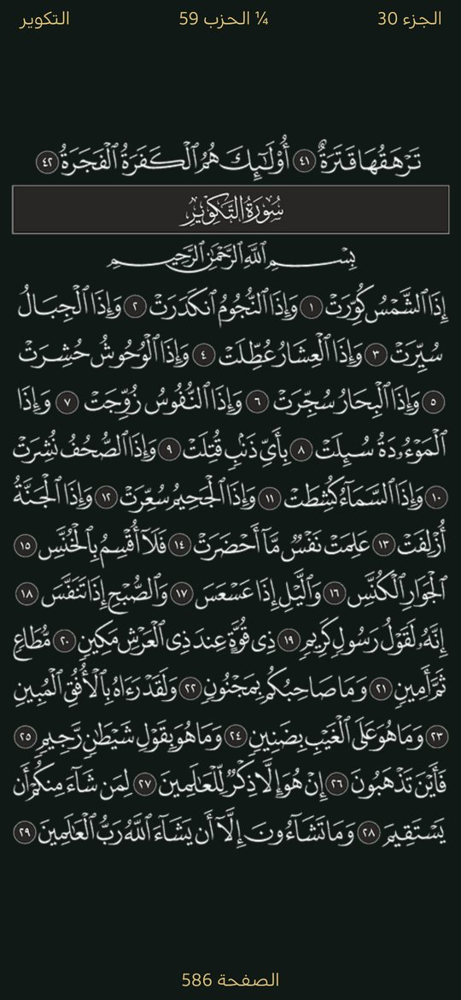
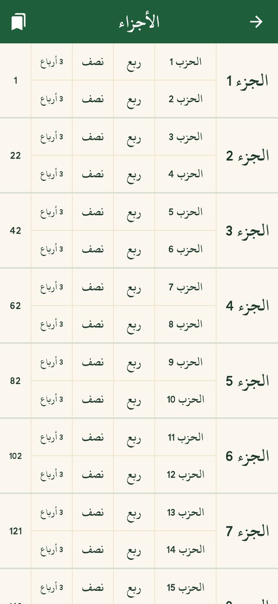
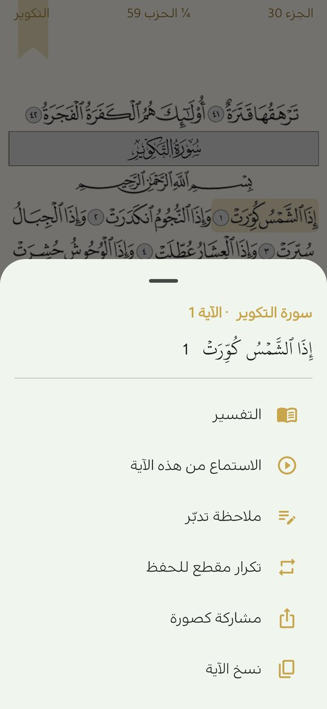
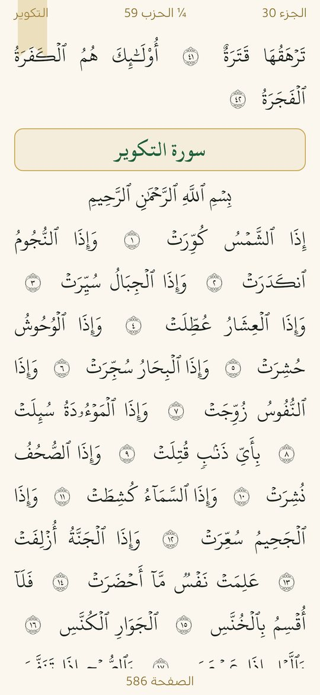
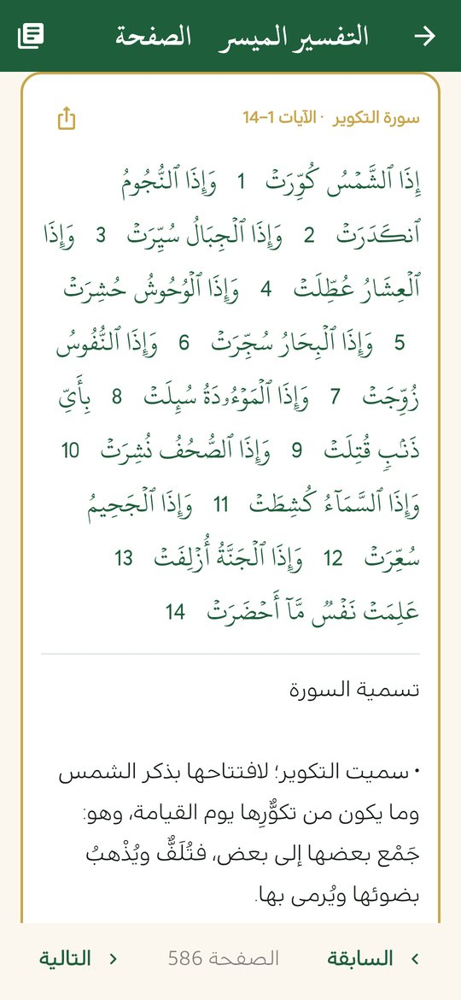
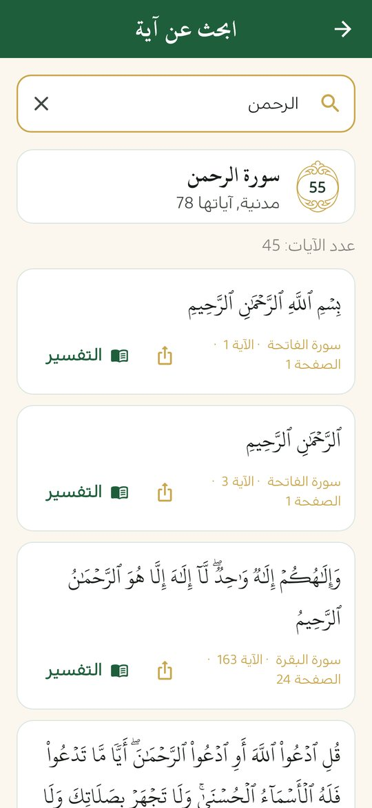

مصحف المدينة كاملاً بدون إنترنت
«منهج حياة» يضع بين يديك المصحف الكامل بصفحاته الـ604، مع التفسير والبحث والاستماع للتلاوة، في تطبيق مجاني دون إعلانات ودون حساب. ويعمل المصحف والتفسير الميسر والبحث دون اتصال بالإنترنت.
ملف APK لأندرويد 7.0 فأحدث · مجاني · دون إعلانات

قراءة المصحف صفحةً صفحة
يعرض التطبيق مصحف المدينة كاملاً في 604 صفحات، تقلّبها كما تقلّب مصحفاً ورقياً، وتفتح أي سورة أو جزء أو حزب من الفهرس.
- يحفظ آخر صفحة قرأتها فتتابع من حيث توقفت.
- علامات مرجعية متعددة تعود إليها متى شئت.
- تكبير الصفحة بإصبعين أو بالنقر مرتين، والتنقل داخلها وهي مكبّرة.
- وضع ليلي مريح للعين يتبع إعداد الجهاز، ويمكن تغييره من داخل المصحف.


اضغط مطوّلاً على أي آية
اضغط مطوّلاً على أي آية في صفحة المصحف فتظهر الآية مميّزة وتفتح قائمة بما يمكنك فعله بها:
- قراءة تفسيرها.
- الاستماع بدءاً من هذه الآية.
- كتابة ملاحظة تدبّر تُحفظ مع بقية بياناتك.
- تكرار مقطع من آية إلى آية وبعدد مرات تختاره، للحفظ.
- مشاركتها كصورة أو نسخها.

القراءة نصاً
إن كنت تفضّل النص على الصورة فيمكنك عرض الصفحة نفسها نصاً بالخط العثماني وبحجم الخط الذي تختاره، مع بقاء الضغط المطوّل على الآيات وتمييز الآية المتلوّة. زر التبديل في أدوات المصحف.

التفسير وترجمة المعاني
التفسير
التفسير الميسر (مجمع الملك فهد) متاح لكل آية، من صفحة المصحف المفتوحة أو من نتائج البحث، مع التنقل بين الصفحات. وتتوفر تفاسير أخرى: السعدي، والمختصر في التفسير، وابن كثير، والقرطبي؛ يُحمَّل كل تفسير سورةً سورة عند أول فتح ثم يبقى على هاتفك ويعمل دون إنترنت.
ترجمة معاني القرآن
ترجمة المعاني بالإنجليزية (صحيح إنترناشونال) تظهر مع التفسير ونتائج البحث وعند الضغط على آية. وتتوفر ترجمات بلغات أخرى تُحمَّل عند اختيارها: الأوردية والإندونيسية والتركية والفرنسية والبنغالية والروسية والإسبانية والصينية والسويدية.

البحث في القرآن
ابحث بكلمة أو بجزء من آية أو باسم سورة، وانتقل مباشرة إلى صفحتها. ويمكنك البحث بالكلمات الإنجليزية في معاني الآيات عند تفعيل الترجمة.

الاستماع للتلاوة
استمع آية آية للصفحة المفتوحة، وتُميَّز الآية المتلوّة وتنتقل الصفحة معها تلقائياً. اختر القارئ (العفاسي، الحصري، المنشاوي، عبد الباسط، السديس، المعيقلي، الشريم وغيرهم)، وكرّر آية أو مقطعاً كاملاً للحفظ، وفعّل مؤقت النوم.
يحتاج الاستماع إلى الإنترنت، لكن يمكنك تحميل السور (سورةً سورة، أو جزء عمّ، أو القرآن كاملاً) للاستماع إليها دون اتصال.
من أين النصوص؟
نص القرآن المستخدم في البحث من الموسوعة القرآنية (quranenc.com)، والتفسير الميسر من مجمع الملك فهد عبر quran.com، والتفاسير الإضافية من مستودع tafsir_api، كلها كما هي دون تعديل. ومواضع الآيات على صفحات المصحف مستخرجة من صور الصفحات نفسها وقد تحقّقنا آلياً من ترقيم الآيات كلها (6236 آية) مقابل عناوين السور.
أسئلة شائعة
هل يعمل المصحف بدون إنترنت؟
نعم. المصحف والتفسير الميسر والبحث تعمل دون إنترنت. يُحتاج الإنترنت فقط للاستماع للتلاوة وتحميل السور والتفاسير والترجمات الإضافية، وبعد تحميلها تعمل دونه.
كم صفحة في المصحف؟
المصحف كاملاً في 604 صفحات كما في مصحف المدينة، مع فهرس السور والأجزاء والأحزاب.
هل أستطيع الاستماع للتلاوة دون إنترنت؟
نعم، بعد تحميل السور التي تريدها. يمكنك تحميل سورة أو جزء عمّ أو القرآن كاملاً.
ما التفاسير المتوفرة؟
التفسير الميسر لكل آية، ويمكنك تحميل تفاسير السعدي والمختصر في التفسير وابن كثير والقرطبي عند الحاجة.
هل التطبيق مجاني؟
نعم، مجاني بالكامل، دون إعلانات ودون مشتريات داخل التطبيق ودون حساب.
اقرأ أيضاً
حمّل منهج حياة مجاناً
القرآن والصلاة والذكر في تطبيق واحد، دون إعلانات ودون حساب.